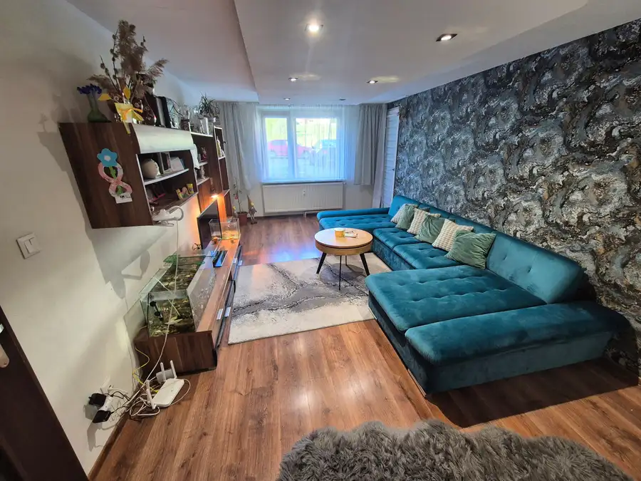
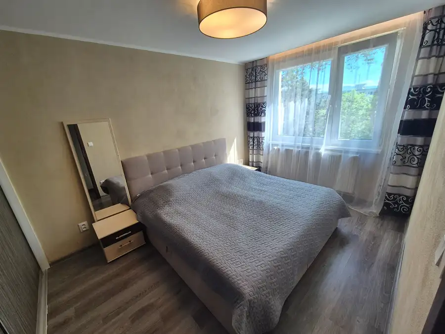
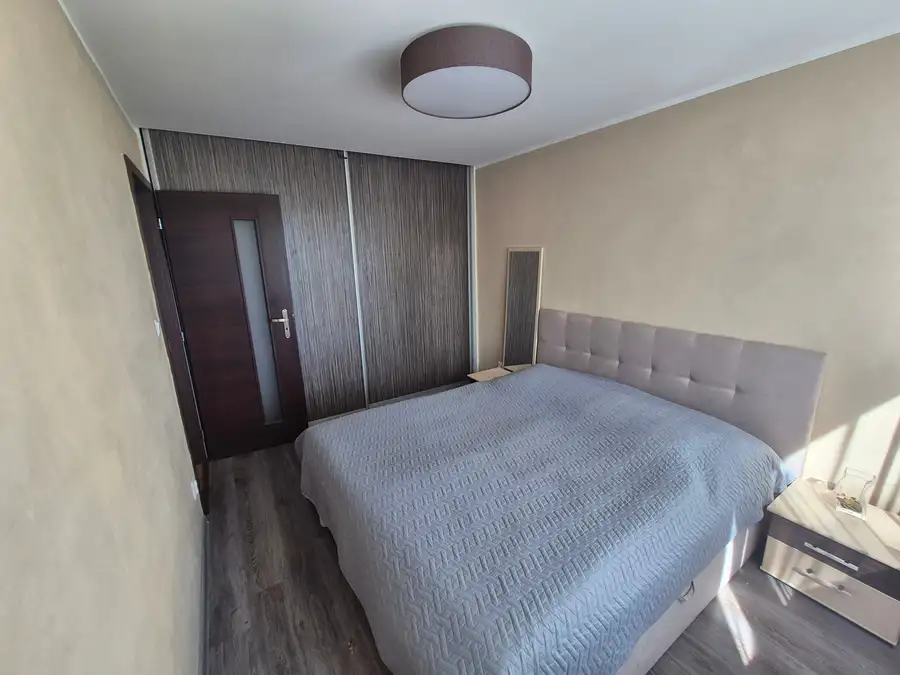
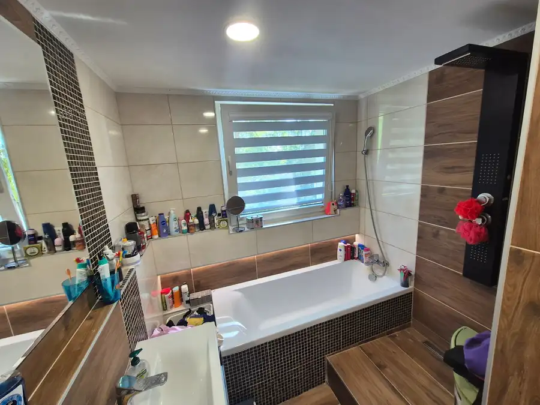
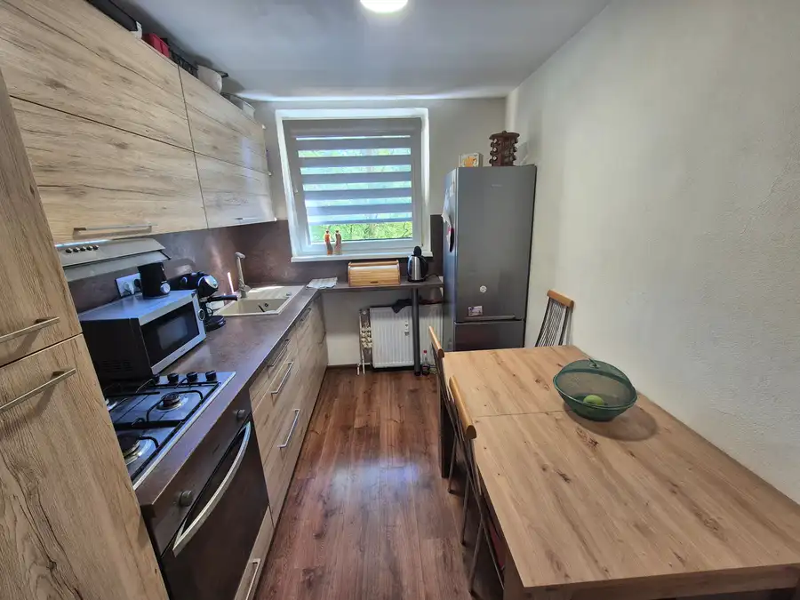
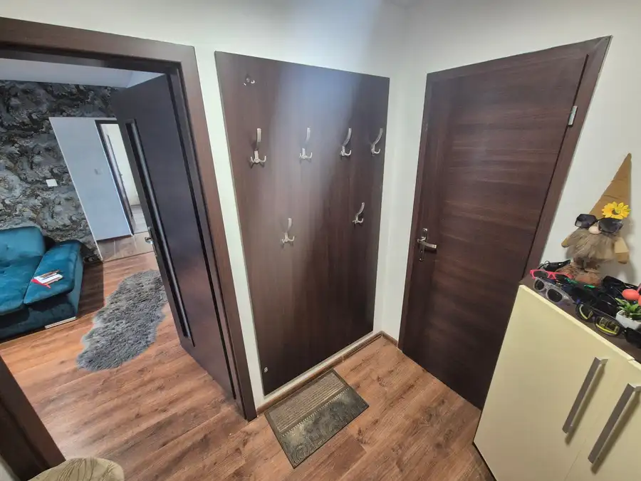
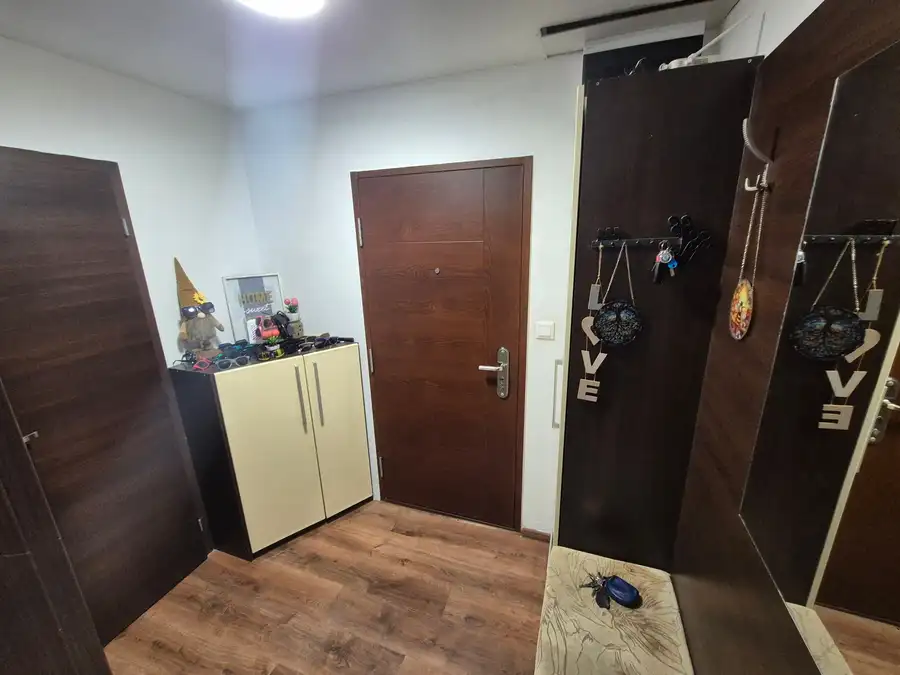

TOP LIVING: Na predaj 3 izb. BAURING s lodžiou - Tulská ulica
Banská Bystrica







- Dispozícia3-izbový
- Plocha68 m²
- Poschodie1. z 9
- StavKompletná rekonštrukcia
O nehnuteľnosti
TOP Living Vám ponúka na predaj kompletne zrekonštruovaný 3-izbový byt na ulici Tulská. Byt o výmere 68 m2 prešiel kompletnou rekonštrukciou v roku 2021. Nehnuteľnosť o výmere 68 m2 sa nachádza na 1 poschodí 9 poschodového zatepleného bytového domu.DISPOZÍCIA BYTU:- vstupná chodba - bezp. dvere- špajza - kuchyňa- obývacia denná izba so vstupom na lodžiu- detská izba- kúpeľňa s vaňou, sprchovým kútom a toaletou geberit- spálňa REKONŠTRUKCIA:- plastové okná- murované bytové jadro- kuchyňa- podlahy...- omietky- rozvody vody a elektrinyposchodie: 1/9výmera: 68 m2orientácia: V - ZK bytu prináleží latková pivnica, ktorá sa nachádza v suteréne bytového domu.BYTOVÝ DOM:- zateplený-zateplená strecha- nový výťah- vymenené "stúpačky"....LOKALITA :V lokalite Fončorda je kompletná občianska vybavenosť: obchody - pár metrov, reštaurácie, blízkosť zastávok MHD, MŠ, ZŠ v pešej vzdialenosti, pred bytovým domom detské ihrisko, parkovanie v okolí bytového domu. Cena: 190 000,-€ -V prípade akýchkoľvek otázok Vám odpovie: Marek Jobko 0905 754 029jobko@topliving.skRealitná spoločnosť TOP Living s.r.o. s 20-ročnými skúsenosťami na realitnom trhu poskytuje kompletné realitné služby na profesionálnej úrovni. Dôvera našich klientov je pre nás najdôležitejšia. Pokiaľ sa zveríte do rúk naším hypotekárnym špecialistom, garantujeme Vám najvýhodnejší hypotekárny úver v akejkoľvek banke. V opačnom prípade dostanete rezervačnú zálohu v plnej výške späť.
Parametre
- Cena vrátane energií
- Nie
- Druh
- 3 izbový byt
- Dátum zverejnenia
- 22. 05. 2026
- Energetický certifikát budovy
- nie je
- Podlažie
- 1
- Počet nadzemných podlaží
- 9
- Rok výstavby
- 1983
- Stav nehnuteľnosti
- Kompletná rekonštrukcia
- Typ
- Predaj
- Typ konštrukcie
- Panelová
- Vybavenie
- Výťah
- Úžitková plocha
- 68 m²